2024 Higher Human Biology - Paper 1 questions
Source: Scottish Qualifications Authority (SQA) / Qualifications Scotland. This is a StemInteract HTML companion, not an official HTML edition. Extracted text is supplied alongside unaltered page images; use the images or original PDF for table layout, diagrams and symbols.
Jump to a question
PDF page 1
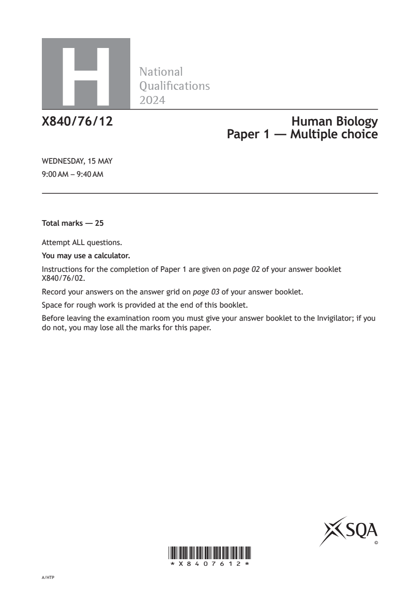
Selectable page text
H
National
Qualications
2024
X840/76/12 Human Biology
Paper 1 — Multiple choice
WEDNESDAY, 15 MAY
9:00 AM – 9:40 AM
Total marks — 25
Attempt ALL questions.
You may use a calculator.
Instructions for the completion of Paper 1 are given on page 02 of your answer booklet
X840/76/02.
Record your answers on the answer grid on page 03 of your answer booklet.
Space for rough work is provided at the end of this booklet.
Before leaving the examination room you must give your answer booklet to the Invigilator; if you
do not, you may lose all the marks for this paper.
©
*X8407612*
A/HTPPDF page 2
Question 1Question 2Question 3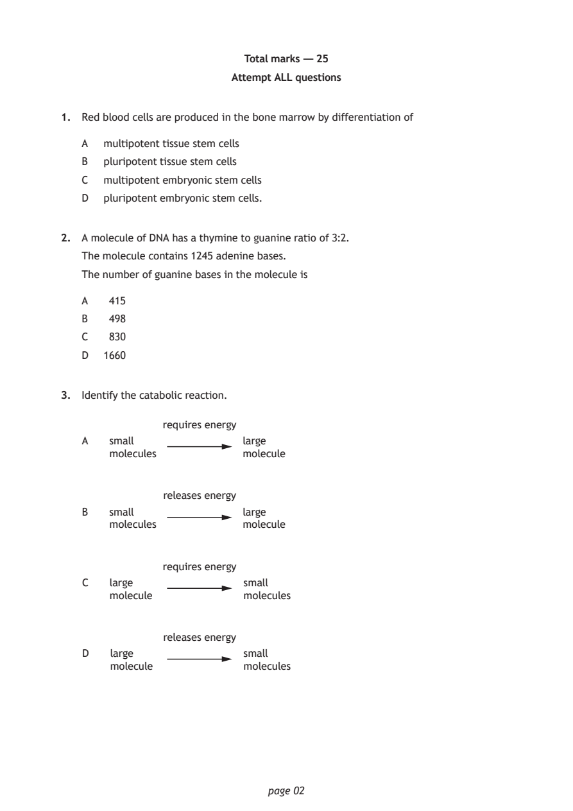
Selectable page text
Total marks — 25
Attempt ALL questions
1. Red blood cells are produced in the bone marrow by differentiation of
A multipotent tissue stem cells
B pluripotent tissue stem cells
C multipotent embryonic stem cells
D pluripotent embryonic stem cells.
2. A molecule of DNA has a thymine to guanine ratio of 3:2.
The molecule contains 1245 adenine bases.
The number of guanine bases in the molecule is
A 415
B 498
C 830
D 1660
3. Identify the catabolic reaction.
requires energy
A small large
molecules molecule
releases energy
B small large
molecules molecule
requires energy
C large small
molecule molecules
releases energy
D large small
molecule molecules
page 02PDF page 3
Question 4Question 5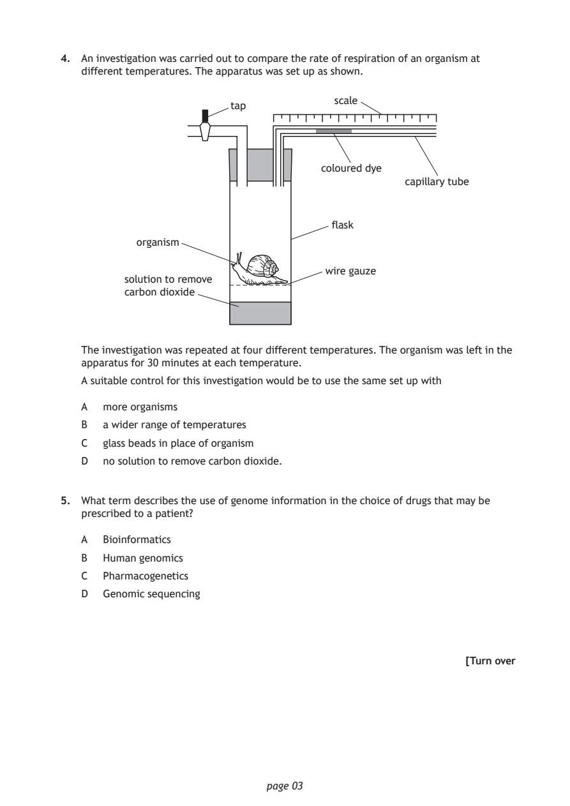
Selectable page text
4. An investigation was carried out to compare the rate of respiration of an organism at
different temperatures. The apparatus was set up as shown.
scale
tap
coloured dye
capillary tube
flask
organism
wire gauze
solution to remove
carbon dioxide
The investigation was repeated at four different temperatures. The organism was left in the
apparatus for 30 minutes at each temperature.
A suitable control for this investigation would be to use the same set up with
A more organisms
B a wider range of temperatures
C glass beads in place of organism
D no solution to remove carbon dioxide.
5. What term describes the use of genome information in the choice of drugs that may be
prescribed to a patient?
A Bioinformatics
B Human genomics
C Pharmacogenetics
D Genomic sequencing
[Turn over
page 03PDF page 4
Question 6Question 7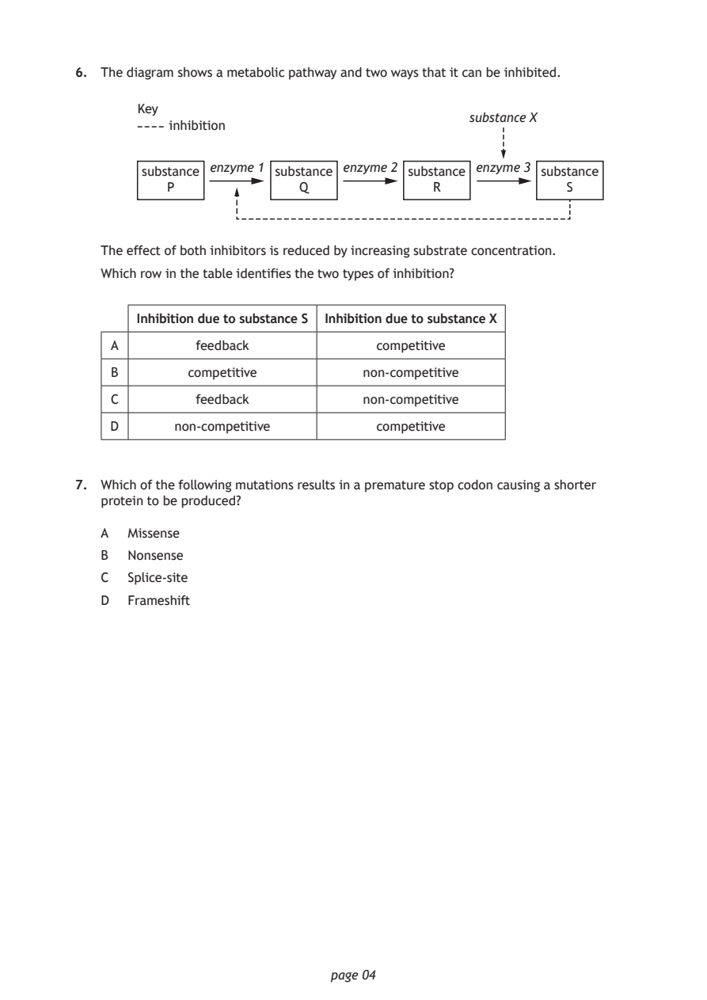
Selectable page text
6. The diagram shows a metabolic pathway and two ways that it can be inhibited.
Key
substance X
inhibition
enzyme 1 enzyme 2 enzyme 3
substance substance substance substance
P Q R S
The effect of both inhibitors is reduced by increasing substrate concentration.
Which row in the table identifies the two types of inhibition?
Inhibition due to substance S Inhibition due to substance X
A feedback competitive
B competitive non-competitive
C feedback non-competitive
D non-competitive competitive
7. Which of the following mutations results in a premature stop codon causing a shorter
protein to be produced?
A Missense
B Nonsense
C Splice-site
D Frameshift
page 04PDF page 5
Question 8Question 9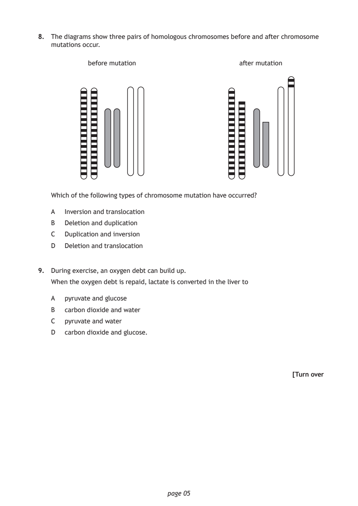
Selectable page text
8. The diagrams show three pairs of homologous chromosomes before and after chromosome
mutations occur.
before mutation after mutation
Which of the following types of chromosome mutation have occurred?
A Inversion and translocation
B Deletion and duplication
C Duplication and inversion
D Deletion and translocation
9. During exercise, an oxygen debt can build up.
When the oxygen debt is repaid, lactate is converted in the liver to
A pyruvate and glucose
B carbon dioxide and water
C pyruvate and water
D carbon dioxide and glucose.
[Turn over
page 05PDF page 6
Question 10Question 11Question 12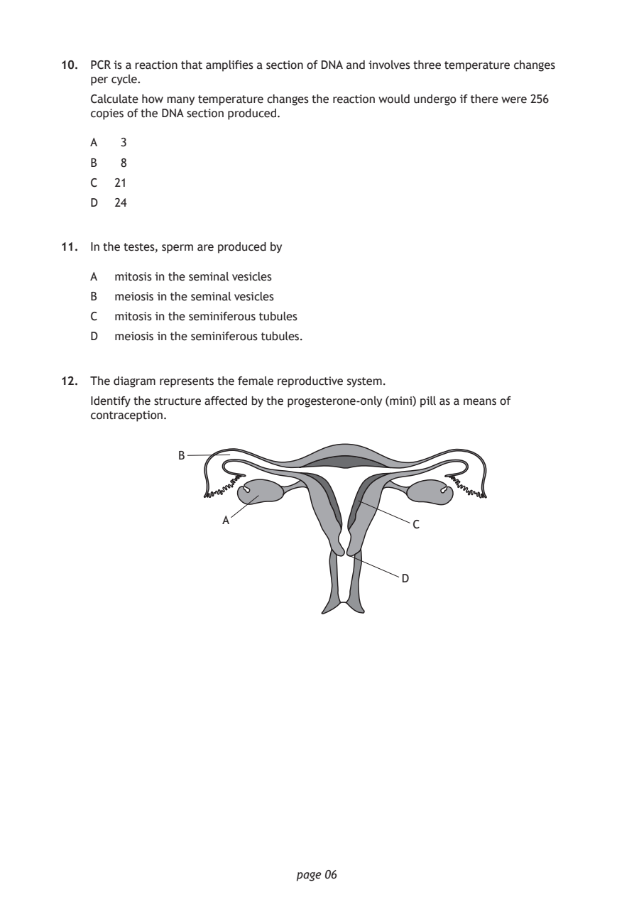
Selectable page text
10. PCR is a reaction that amplifies a section of DNA and involves three temperature changes
per cycle.
Calculate how many temperature changes the reaction would undergo if there were 256
copies of the DNA section produced.
A 3
B 8
C 21
D 24
11. In the testes, sperm are produced by
A mitosis in the seminal vesicles
B meiosis in the seminal vesicles
C mitosis in the seminiferous tubules
D meiosis in the seminiferous tubules.
12. The diagram represents the female reproductive system.
Identify the structure affected by the progesterone-only (mini) pill as a means of
contraception.
B
A
C
D
page 06PDF page 7
Question 13Question 14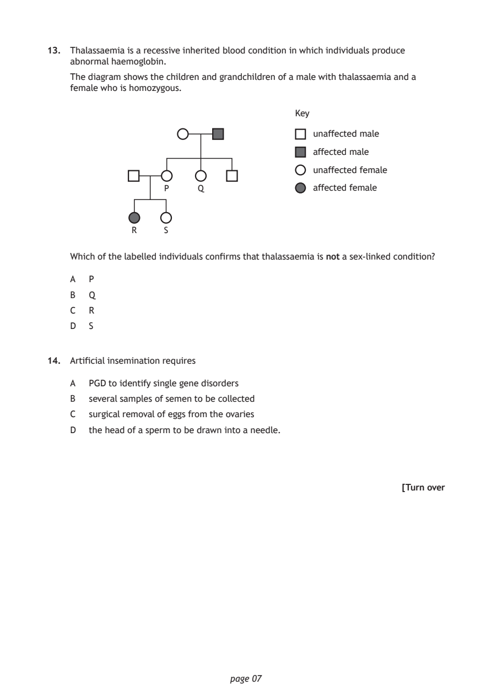
Selectable page text
13. Thalassaemia is a recessive inherited blood condition in which individuals produce
abnormal haemoglobin.
The diagram shows the children and grandchildren of a male with thalassaemia and a
female who is homozygous.
Key
unaffected male
affected male
unaffected female
P Q affected female
R S
Which of the labelled individuals confirms that thalassaemia is not a sex-linked condition?
A P
B Q
C R
D S
14. Artificial insemination requires
A PGD to identify single gene disorders
B several samples of semen to be collected
C surgical removal of eggs from the ovaries
D the head of a sperm to be drawn into a needle.
[Turn over
page 07PDF page 8
Question 15Question 16Question 17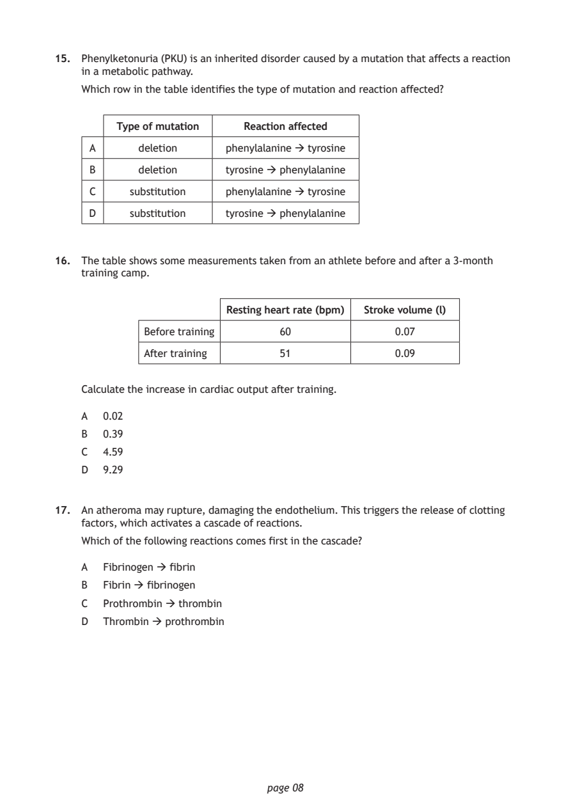
Selectable page text
15. Phenylketonuria (PKU) is an inherited disorder caused by a mutation that affects a reaction
in a metabolic pathway.
Which row in the table identifies the type of mutation and reaction affected?
Type of mutation Reaction affected
A deletion phenylalanine tyrosine
B deletion tyrosine phenylalanine
C substitution phenylalanine tyrosine
D substitution tyrosine phenylalanine
16. The table shows some measurements taken from an athlete before and after a 3-month
training camp.
Resting heart rate (bpm) Stroke volume (l)
Before training 60 0.07
After training 51 0.09
Calculate the increase in cardiac output after training.
A 0.02
B 0.39
C 4.59
D 9.29
17. An atheroma may rupture, damaging the endothelium. This triggers the release of clotting
factors, which activates a cascade of reactions.
Which of the following reactions comes first in the cascade?
A Fibrinogen fibrin
B Fibrin fibrinogen
C Prothrombin thrombin
D Thrombin prothrombin
page 08PDF page 9
Question 18Question 19Question 20Question 21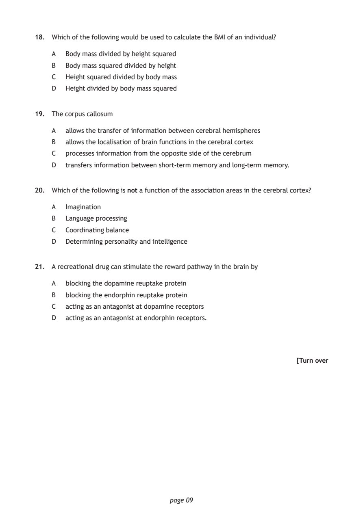
Selectable page text
18. Which of the following would be used to calculate the BMI of an individual?
A Body mass divided by height squared
B Body mass squared divided by height
C Height squared divided by body mass
D Height divided by body mass squared
19. The corpus callosum
A allows the transfer of information between cerebral hemispheres
B allows the localisation of brain functions in the cerebral cortex
C processes information from the opposite side of the cerebrum
D transfers information between short-term memory and long-term memory.
20. Which of the following is not a function of the association areas in the cerebral cortex?
A Imagination
B Language processing
C Coordinating balance
D Determining personality and intelligence
21. A recreational drug can stimulate the reward pathway in the brain by
A blocking the dopamine reuptake protein
B blocking the endorphin reuptake protein
C acting as an antagonist at dopamine receptors
D acting as an antagonist at endorphin receptors.
[Turn over
page 09PDF page 10
Question 22Question 23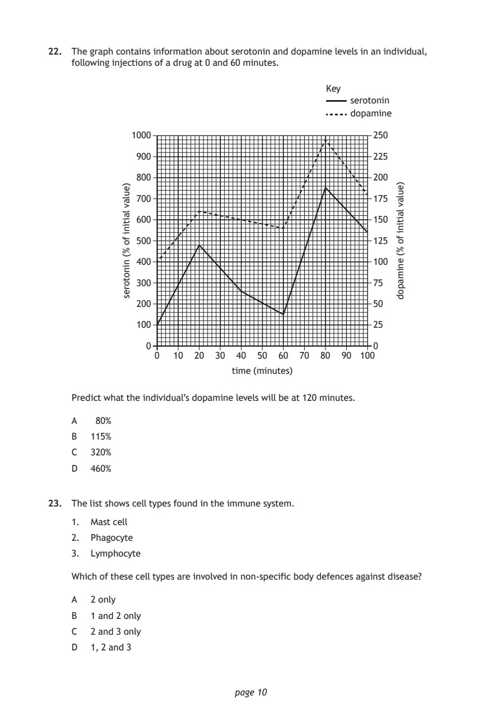
Selectable page text
22. The graph contains information about serotonin and dopamine levels in an individual,
following injections of a drug at 0 and 60 minutes.
Key
serotonin
dopamine
0 10 20 30 40 50
time (minutes)
page 10
)eulav
laitini
fo
%(
ninotores
)eulav
laitini
fo
%(
enimapod
1000 250
900 225
800 200
700 175
600 150
500 125
400 100
300 75
200 50
100 25
0 0
60 70 80 90 100
Predict what the individual’s dopamine levels will be at 120 minutes.
A 80%
B 115%
C 320%
D 460%
23. The list shows cell types found in the immune system.
1. Mast cell
2. Phagocyte
3. Lymphocyte
Which of these cell types are involved in non-specific body defences against disease?
A 2 only
B 1 and 2 only
C 2 and 3 only
D 1, 2 and 3PDF page 11
Question 24Question 25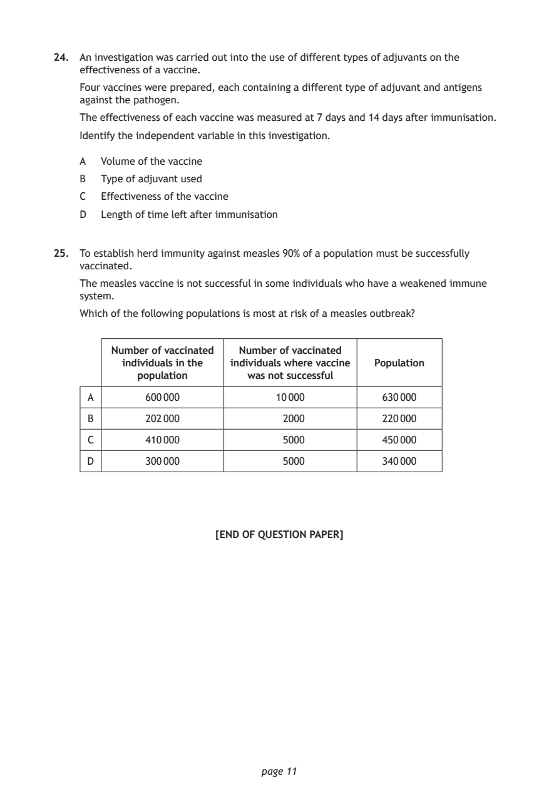
Selectable page text
24. An investigation was carried out into the use of different types of adjuvants on the
effectiveness of a vaccine.
Four vaccines were prepared, each containing a different type of adjuvant and antigens
against the pathogen.
The effectiveness of each vaccine was measured at 7 days and 14 days after immunisation.
Identify the independent variable in this investigation.
A Volume of the vaccine
B Type of adjuvant used
C Effectiveness of the vaccine
D Length of time left after immunisation
25. To establish herd immunity against measles 90% of a population must be successfully
vaccinated.
The measles vaccine is not successful in some individuals who have a weakened immune
system.
Which of the following populations is most at risk of a measles outbreak?
Number of vaccinated Number of vaccinated
individuals in the individuals where vaccine Population
population was not successful
A 600 000 10 000 630 000
B 202 000 2000 220 000
C 410 000 5000 450 000
D 300 000 5000 340 000
[END OF QUESTION PAPER]
page 11PDF page 12

Selectable page text
SPACE FOR ROUGH WORK
page 12PDF page 13

Selectable page text
SPACE FOR ROUGH WORK
page 13PDF page 14

Selectable page text
[BLANK PAGE]
DO NOT WRITE ON THIS PAGE
page 14PDF page 15

Selectable page text
[BLANK PAGE]
DO NOT WRITE ON THIS PAGE
page 15PDF page 16

Selectable page text
[BLANK PAGE]
DO NOT WRITE ON THIS PAGE
page 16